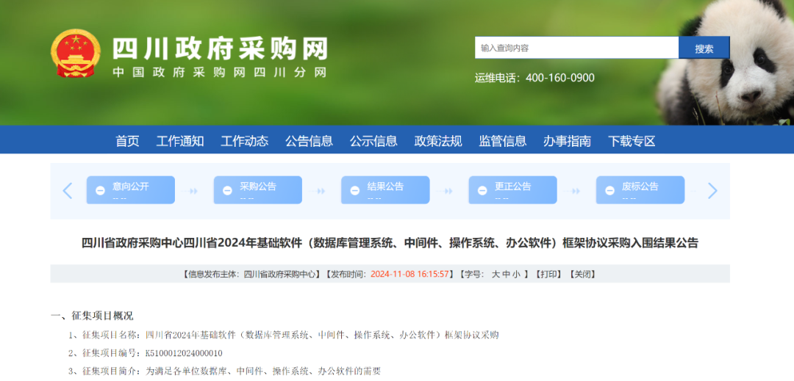
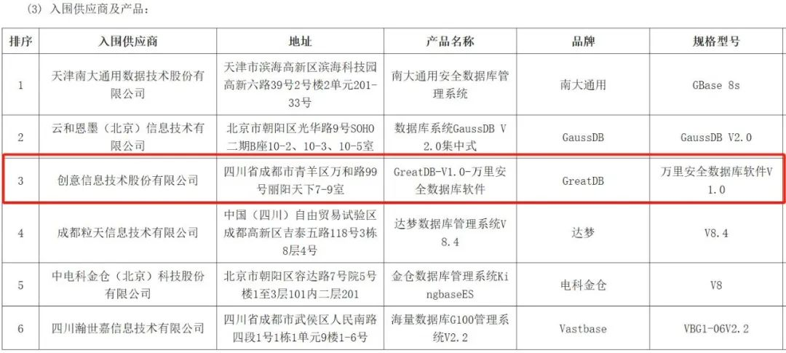

喜报 | 万里数据库入围四川省2024年基础软件框架协议采购项目
近日，四川省2024年基础软件（数据库管理系统、中间件、操作系统、办公软件）框架协议采购项目继公开征集后发布入围结果公告。公告显示，万里安全数据库软件V1.0入围第二包——集中式数据库。

四川政府采购网
四川省2024年基础软件（数据库管理系统、中间件、操作系统、办公软件）框架协议采购由四川省政府采购中心发起征集，以满足各单位数据库、中间件、操作系统、办公软件的需要。本次标包2招标共有13家企业参与响应，经过初审、详细评审、技术评审等环节后，最终确定了入围厂商名单。

入围公告
作为国内领先的数据库产品与服务提供商，万里数据库始终专注国产自主可控技术的研发与投入，践行“极致稳定 极致性能 极致易用”产品研发理念，致力于提升数据库产品性能、稳定性、安全性和易用性。如今，万里数据库凭借“MySQL替换0改造”的强大优势，已成功跻身MySQL技术路线信创数据库首选品牌。此次标包2入围厂商中，万里数据库也是唯一一家基于MySQL技术路线的数据库厂商。
GreatDB安全数据库
万里安全数据库（集中式）是一款自主研发的集中式数据库产品，基于数据冗余与副本管理确保数据库系统的稳定可靠无单点，同时提供完备的事务支持，适用于金融级在线事务处理和高并发业务场景。目前已适配龙芯、飞腾、鲲鹏、海光、麒麟、统信等主流国产软硬件平台，满足在全国产化平台上的部署与使用。
2023年12月，万里安全数据库软件V1.0成功入围中国信息安全测评中心、国家保密科技测评中心联合发布的安全可靠测评清单，成为首批通过安全可靠测评的数据库厂商之一。
如今，信息技术高度发达，关键技术和基础设施的安全可控至关重要。在创意信息的引领下，万里数据库将继续坚持核心技术攻关与自主研发创新，持续打造高质量、自主可控的核心数据库产品及解决方案，与产业上下游伙伴共同推动国产软硬件产业生态建设，为国家关键技术的自主可控贡献力量！